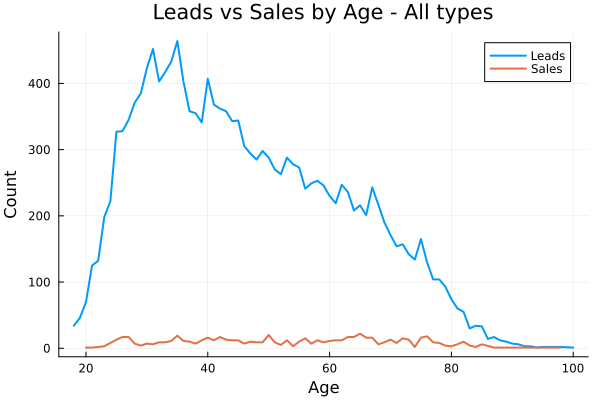
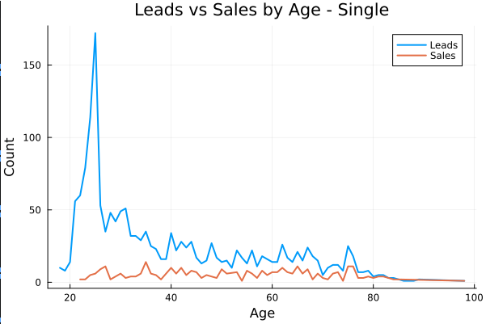
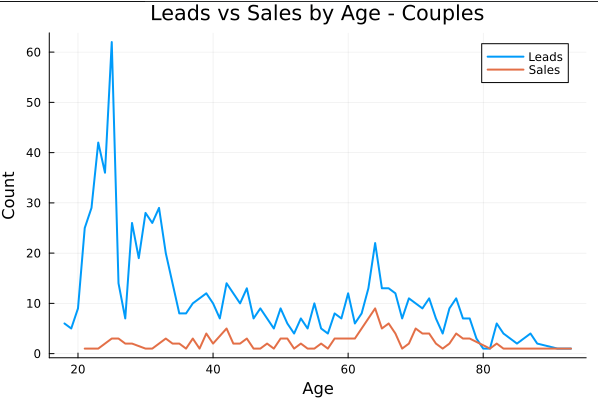
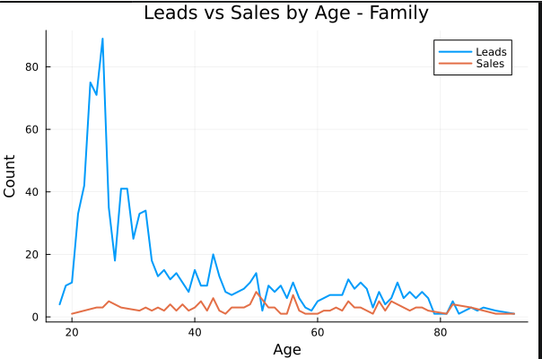
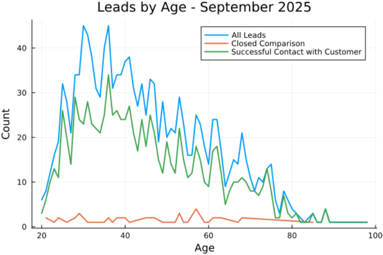
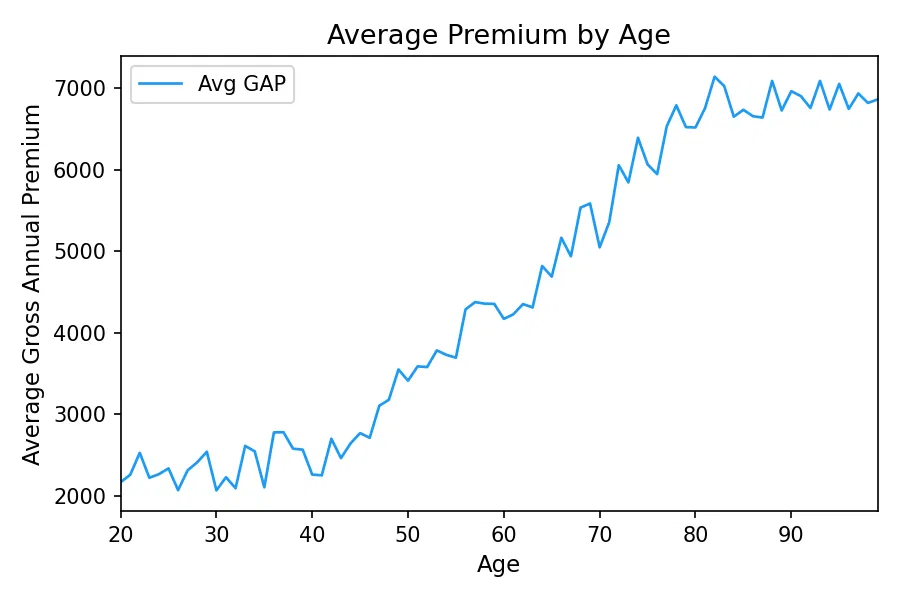
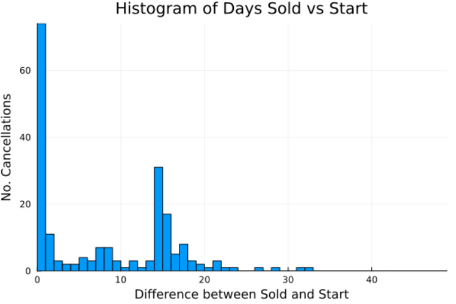
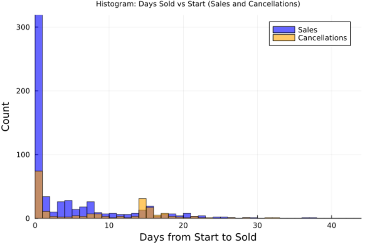
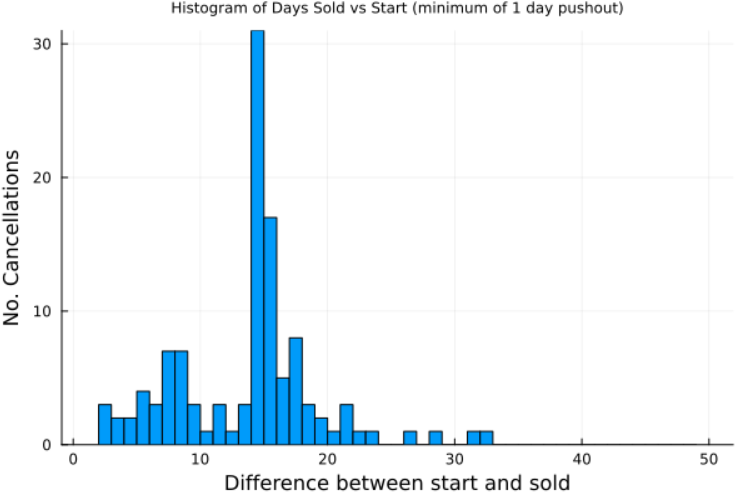

Project write-up
Money.com.au cancellation analytics
Who the call centre should target, how spend changes with age, and why pushing a start date out past five days more than doubles cancellations.
I want to start by painting a picture. money.com.au, the business I’m currently employed with, is wanting to create a profitable call centre selling health insurance. The business model is similar to ones you may already be familiar with — call people, compare their policy against the market, get paid a commission from the fund for doing it. Some of the big companies, such as CompareTheMarket, iSelect, and the rest, have huge brand recognition and huge bankrolls. They can bully their way around the comparison space. The little dogs, like Money, do not have such luxuries. Despite being a cool URL, money.com.au is going to have a very difficult time breaking into the industry from a brand recognition perspective. Therefore, it is important to pinch as many pennies as possible.
Before I joined the business, the approach was what they call a “shotgun approach”: advertise to everyone, dial hard, sell what we can. Immediately I recognised that this must not be the most effective tactic. Surely it would be more effective to target specific demographics — given that older people, for example, need more comprehensive coverage than a man in his 20s, there must be some optimisation possible here.
I told my boss that I’m a budding mathematician, and I’m looking for some personal projects to build my portfolio. I asked him one question:
What are the biggest opportunities for this call centre at the moment?
He immediately rattled off a few:
- Currently, we have no idea the types of people we sell to. What age demographic is the most effective to target?
- As an extension of this, how do different demographics spend their money?
- We’re getting killed by cancellations at the moment. Are there any common trends in cancellations?
With his blessing, I downloaded all of the sales data available to me and got stuck in. With that, let’s begin.
Who should we target?
First question: who should we target in the future? To answer that, let’s look at the past. I had a look at all data of people who’ve made an enquiry, sorted by age, and plotted this against the sales made.




What immediately becomes obvious is that advertising to people in their 20s through 40s seems to be ineffective. If it were effective, the red line would sit substantially closer to the blue line.
There are some obvious limitations of these charts. A keen observer may notice that for the Family chart, the red line intersects and crosses the blue line. That is a limitation of how ages are stored in the CRM our business uses. Often it is blank. Often it defaults their birthday to 01/01/1991. These numbers are only pulled from specific lead sources, as we are investigating only the organic, outbound leads. I had to do a fair bit of cleaning of this data to make it anywhere close to useful.
The natural extension of this question, then, is: are we actually talking to these young people? It appears yes. They’re just not buying anything. Breaking down the “why” behind this is beyond the scope of this analysis.

Still, the conclusion is obvious — target an older demographic. This becomes clear when looking at the average spend of each age group.

This answers questions 1 and 2.
What’s the deal with all these cancellations?
Sales is more an art than a science, but it is helpful to muse on the psychology of a customer for this exercise. My suspicion was that cancellations were a function of a few different things: health funds retaining their customers, people getting cold feet, or people unhappy with the purchase. The problem with targeting an older demographic is that, very often, they’ve been with the same fund for many years. It is therefore extremely easy for the original provider to tug the heartstrings of their client, soften them up, throw them a temporary discount, and keep their business. To be honest, there’s not a lot you can do from a mathematical perspective to prevent this. We end our sales calls by prepping the client for a retention call from their fund, but that is beyond the scope of this analysis.
What I wanted first to do was look into how many sales are made by using a “push-out” — starting the policy on a day that isn’t the same day we’re talking to the client — and whether this correlates to an uptick in cancellations.



The easy win here is to stop pushing out sales by two weeks. It seems that any push-out further than five days more than doubles the likelihood of the customer cancelling.
(A keen observer may also notice that there seem to be more cancellations at the 14-day mark than there are sales made. This is not lost on me, nor is this an error in the data. I know the answer to why this is true, but I cannot disclose it here. Perhaps ask me personally for more information on this.)
Answers
- What age demographic is the most effective to target?
- Older people, 60+.
- How do different demographics spend their money?
- Older people spend more money and are, statistically, easier to sell to.
- Are there any common trends in cancellations?
- Any push-out past five days doubles the rate of cancellations.